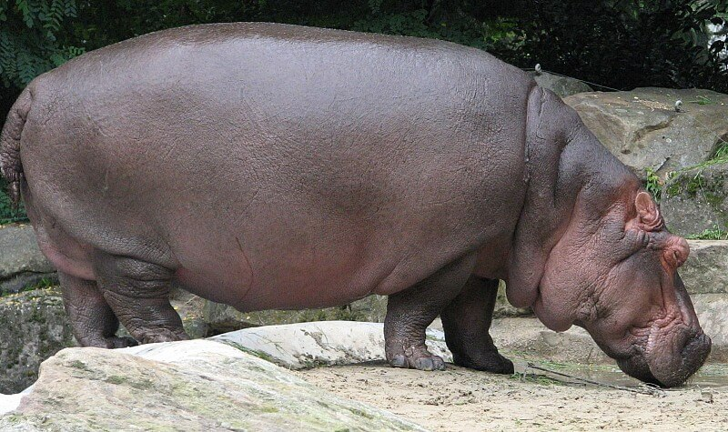

Относится к отряду парнокопытных, подотряду свинообразных. Распространен на Африканском континенте. Вес может достигать 4 т., длина до 5,4 м. Ведет преимущественно полуводный образ жизни. Пасть бегемота может раскрываться необычайно широко – на 150 градусов. Интересно, что бегемот способен очень быстро бегать на суше. Достаточно агрессивное животное. При провокации со стороны человека – способен неожиданно напасть.
